Azure Governance Enterprise Lab
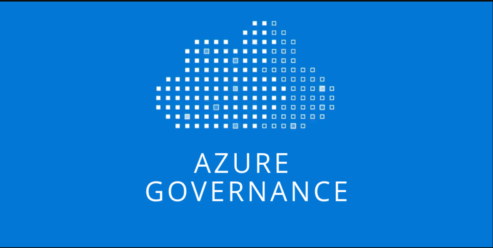
| Project Category | Cloud Governance and Security |
|---|---|
| Platform | Microsoft Azure |
| Core Technologies | Azure Policy, RBAC, Resource Locks, Cost Management |
| Project Focus | Subscription-level governance for Production and Development |
Project Overview
This enterprise lab implements a subscription-level Azure governance foundation for two logically separated environments. It combines standardized naming and tagging, approved-region enforcement, policy-driven controls, role-based access control, deletion protection, cost monitoring, compliance review, and validation testing.
1. Business Scenario and Requirements
YCS Enterprise Lab represents a small-to-medium organization hosting controlled Production workloads and an isolated Development environment in Microsoft Azure. The governance model improves resource organization, operational control, security management, policy enforcement, cost visibility, and future scalability.
| Requirement | Description |
|---|---|
| Environment separation | Production and Development resources are logically separated. |
| Standardized naming | Azure resources follow identifiable naming conventions adapted to each resource type. |
| Regional control | Resources are restricted to Qatar Central or UAE Central. |
| Tag governance | Resources use Environment, Department, Owner, CostCenter, Criticality, and Project metadata. |
| Environment validation | The Environment tag is restricted to Production or Development. |
| Tag inheritance | Resources can inherit the Environment tag from their parent Resource Group when missing. |
| Resource protection | Production resources are protected against accidental deletion. |
| Cost control | A monthly budget and cost notifications are configured. |
| Access governance | Administrative access follows Azure RBAC and scoped access principles. |
| Compliance visibility | Azure Policy compliance is reviewed and documented. |
2. Scope and Architecture
The project covers subscription-level governance, separate resource groups, standardized resource names and tags, representative networking and storage resources, custom and built-in Azure Policy assignments, approved locations, tag inheritance, resource protection, monthly budgets, RBAC, compliance review, and validation testing.
2.1 Subscription Design
| Component | Value |
|---|---|
| Subscription | Azure subscription 1 |
| Subscription purpose | Azure Governance Enterprise Lab |
| Governance scope | Subscription level |
| Production region | Qatar Central |
| Development region | UAE Central |
| Approved regions | Qatar Central and UAE Central |
| Project owner | Yasser Alrajeh |
A single subscription was selected for this controlled lab. Production and Development are separated by resource group while Azure Policy, RBAC, Cost Management, budgets, and compliance reporting are centrally governed at subscription scope.
2.2 Resource Hierarchy
- Microsoft Entra Tenant
- Azure Subscription 1
- Governance Controls
- Azure Policy
- Azure RBAC
- Resource Locks
- Cost Management
- Compliance
- rg-ycs-prod-core-01
- rg-ycs-dev-core-01
- Governance Controls
- Azure Subscription 1
3. Naming, Environment, and Tagging Design
3.1 Naming Convention
<resource-type>-<organization>-<environment>-<workload/optional>-<instance>The naming model is adapted by resource type. Some Azure resources, such as Storage Accounts, require a different format because names must be globally unique, lowercase, alphanumeric, and cannot contain hyphens.
3.2 Environment Design
| Environment | Resource Group | Region | Criticality | Purpose |
|---|---|---|---|---|
| Production | rg-ycs-prod-core-01 | Qatar Central | High | Controlled production resources |
| Development | rg-ycs-dev-core-01 | UAE Central | Medium | Development and testing resources |
3.3 Tagging Strategy
| Tag | Production Value | Development Value | Purpose |
|---|---|---|---|
| Environment | Production | Development | Identifies the deployment environment. |
| Department | IT | IT | Identifies the responsible department. |
| Owner | CloudTeam | CloudTeam | Identifies the responsible cloud team. |
| CostCenter | CC-1001 | CC-1001 | Supports cost allocation and reporting. |
| Criticality | High | Medium | Identifies business impact level. |
| Project | EnterpriseLab | EnterpriseLab | Associates resources with the project. |
4. Governance Control Design
| Governance Control | Configuration | Purpose |
|---|---|---|
| Custom Azure Policy | Allow only Production and Development Environment values | Prevent invalid environment classification. |
| Tag inheritance policy | Inherit Environment from Resource Group | Standardize metadata automatically. |
| Allowed Locations | Qatar Central and UAE Central | Restrict deployments to approved regions. |
| Resource Lock | CanNotDelete on Production Resource Group | Protect against accidental deletion. |
| Budget alerts | 10%, 25%, and 50% shown in the captured configuration | Provide progressive cost notifications. |
| RBAC | Reader and Contributor assignment workflow with scoped administration | Demonstrate delegated access. |
| Compliance | Azure Policy Compliance dashboard | Validate governance implementation. |
5. Implementation
The Azure Portal was used to configure and validate the governed environment. The screenshots are ordered below according to what each image actually shows. Intermediate wizard screens are retained where they document the implementation workflow.
5.1 Resource Groups and Core Resources
Representative networking and platform resources were provisioned to provide a practical scope for governance controls.
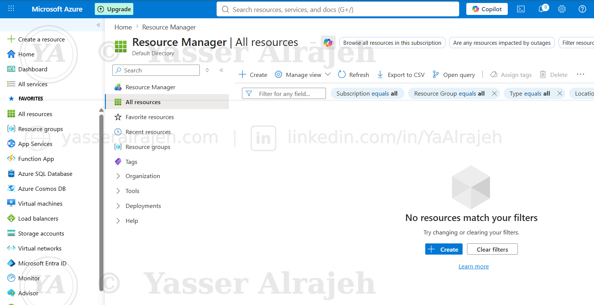
Initial Resource Manager / All resources view used at the start of the provisioning workflow.
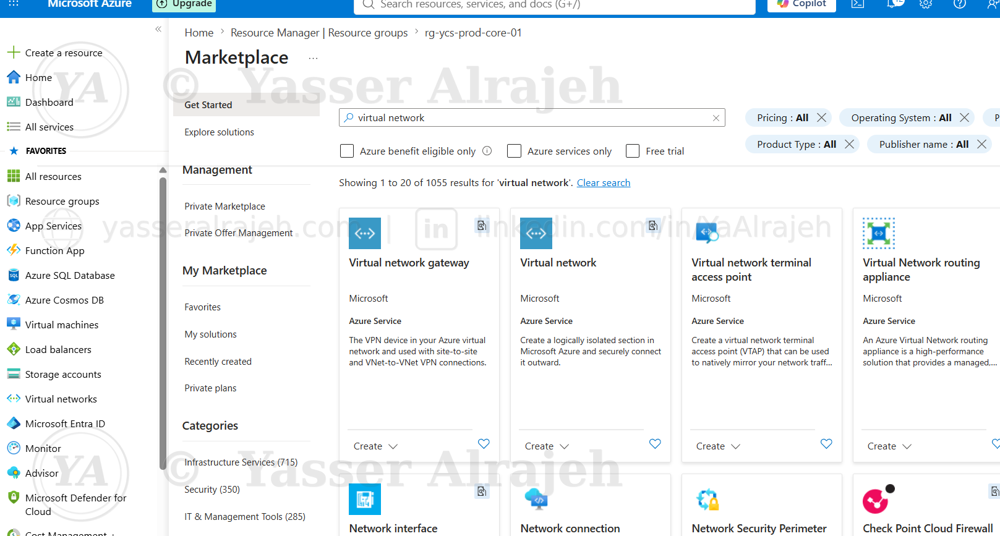
Virtual Network selected from Azure Marketplace during Production network provisioning.
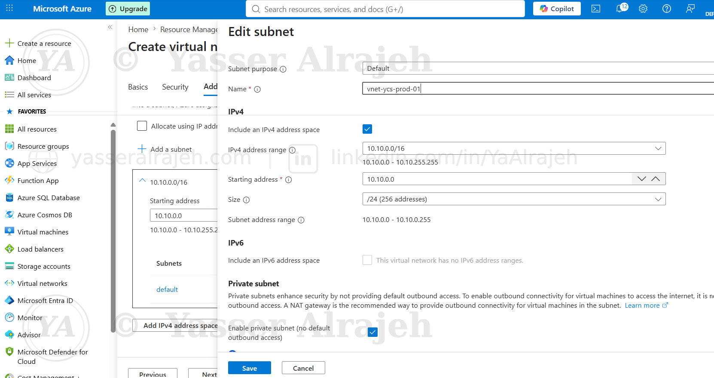
Production VNet configuration showing the 10.10.0.0/16 address space and subnet configuration workflow.
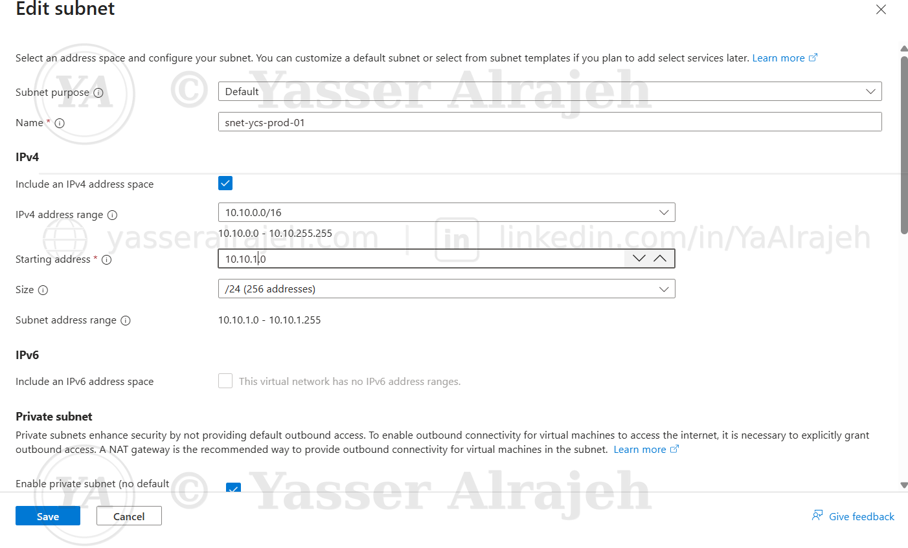
Production subnet configured with a 10.10.1.0/24 range. This screenshot captures the resource naming used during provisioning.

Network Security Group selected from Azure Marketplace as part of the Production network build.

Public IP Address selected from Azure Marketplace for the governed environment.
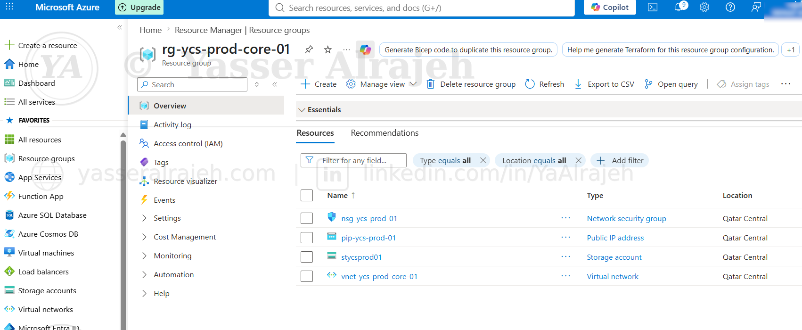
Production Resource Group inventory showing the deployed NSG, Public IP, Storage Account, and Virtual Network.
5.2 Tagging Implementation
The approved metadata schema was applied to the Production resource group to support ownership, environment classification, criticality, and cost allocation.
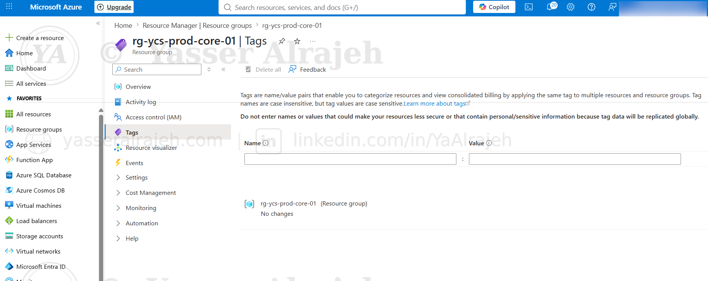
Production Resource Group Tags blade before the metadata values were entered.

Production tags configured with Environment: Production, Department: IT, Owner: CloudTeam, CostCenter: CC-1001, Criticality: High, and Project: EnterpriseLab.
5.3 Azure Policy
Custom and built-in Azure Policies were used to control Environment values, inherit metadata, and restrict approved deployment regions.

Azure Policy Overview at an early stage of the lab before the final policy set was fully evaluated.
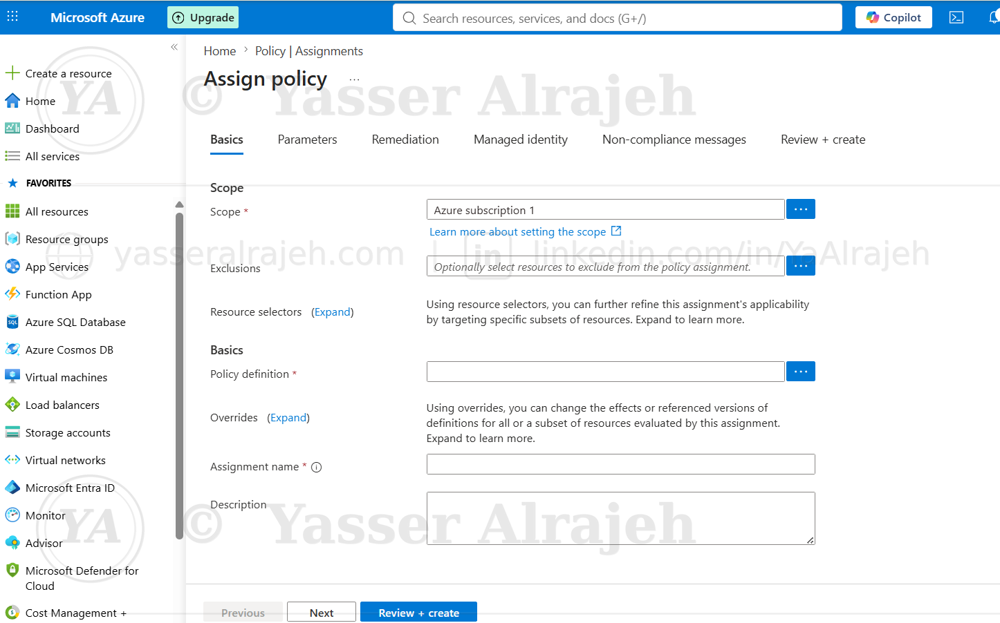
Subscription-level policy assignment workflow.

Custom policy rule restricting the Environment tag to Production or Development.
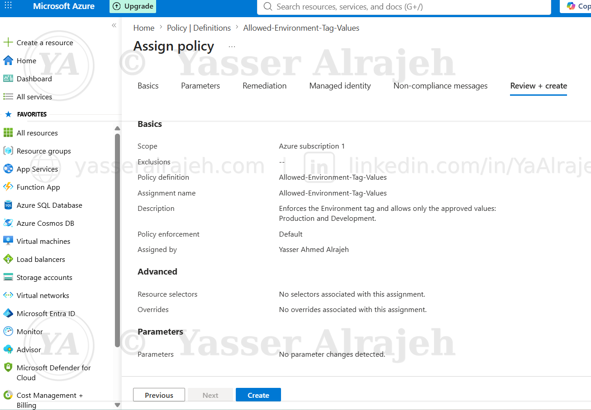
Review + create screen for the Allowed-Environment-Tag-Values policy assignment.
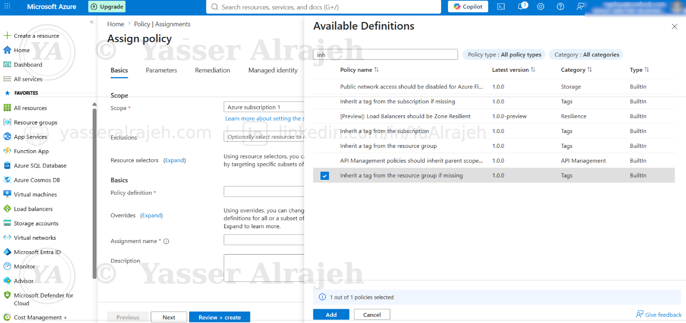
Built-in “Inherit a tag from the resource group if missing” policy selected for assignment.
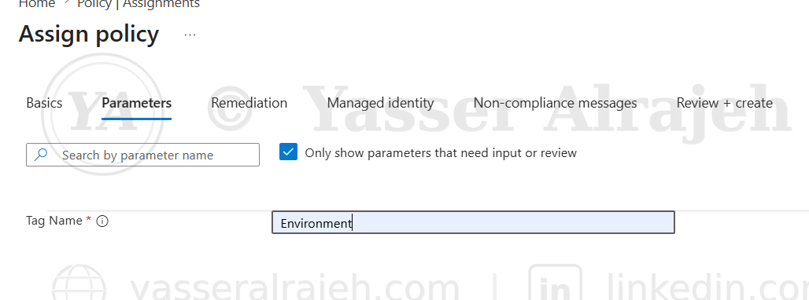
Environment specified as the tag name parameter for the inheritance policy.

Allowed Locations policy configured with Qatar Central and UAE Central, matching the values visible in the captured configuration.
5.4 Resource Protection
A CanNotDelete lock was used as a Production protection control. The deletion workflow below documents the controlled validation attempt against the Production resource group.

Controlled deletion attempt against rg-ycs-prod-core-01 as part of the resource-protection validation workflow.
5.5 Cost Governance
A monthly budget configuration was prepared with progressive alert thresholds. The screenshot shows the thresholds that were actually captured during the implementation.

Azure Budget alert conditions showing 10%, 25%, and 50% thresholds with an email recipient configured.
5.6 Role-Based Access Control
Azure RBAC was configured through the Resource Group Access control (IAM) workflow. Reader and Contributor roles were selected to demonstrate differentiated access levels.

Access control (IAM) menu used to start a new role assignment.
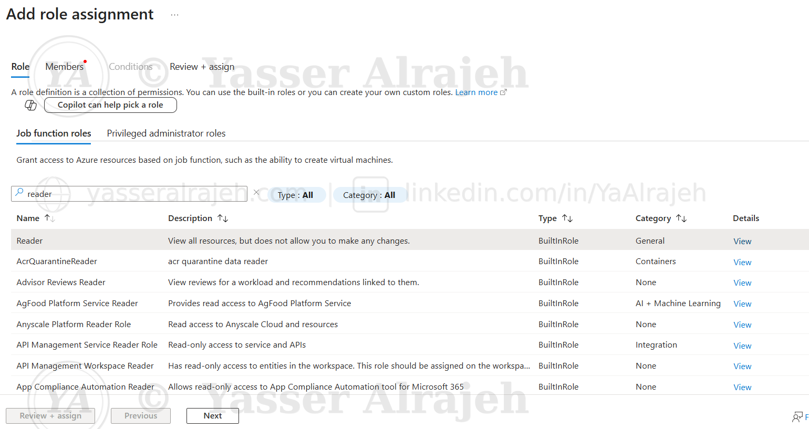
Reader role selected to provide read-only access without modification permissions.
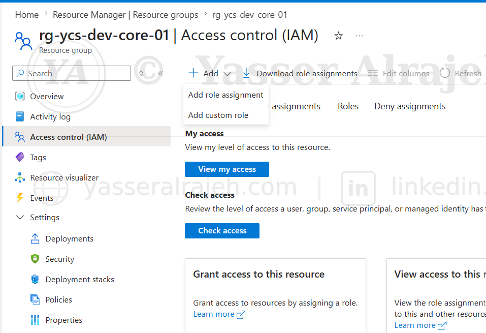
Role assignment workflow opened again to configure an additional delegated role.
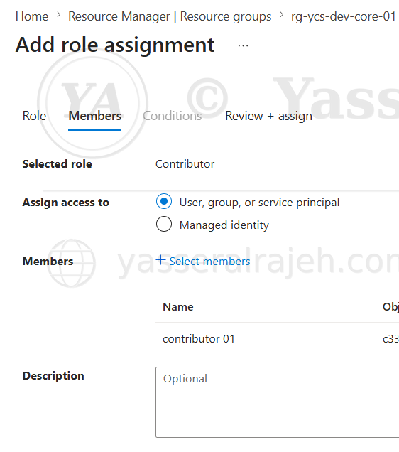
Contributor role assignment with contributor01 selected as the member.
6. Governance Validation and Compliance
6.1 Policy Compliance Review
The Azure Policy dashboards were reviewed to identify compliant and non-compliant resources and determine where remediation was required.

Policy Overview showing 40% overall resource compliance, with two compliant and two non-compliant policy evaluations.

Detailed Compliance view showing Allowed Locations and Allowed-Environment-Tag-Values as non-compliant, while the tag inheritance assignment is compliant.
6.2 Resource Inventory Validation
The Production resource inventory was reviewed to confirm the set of resources covered by governance controls.
Resource inventory for rg-ycs-prod-core-01 used to validate the Production governance scope.
6.3 Negative Testing
A deliberate out-of-region deployment was prepared to test the Allowed Locations policy. Australia Central was selected as the non-approved region for the test.

Virtual Network deployment workflow opened in the Development resource group for the policy validation test.
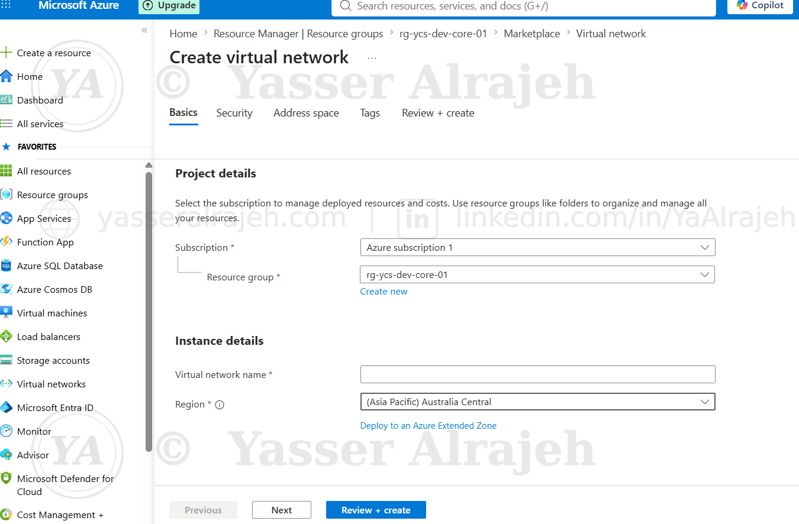
Negative-test configuration using Australia Central, a region outside the approved Qatar Central / UAE Central policy set.
6.4 Governance Monitoring Alert Setup
Azure Monitor was also opened at subscription scope to prepare governance-related alerting. These screenshots document the alert-rule setup workflow rather than a final “no active alerts” result.
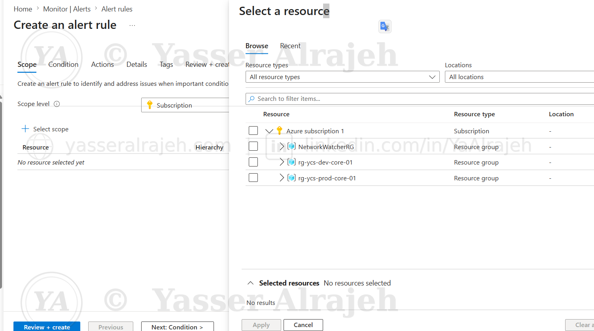
Alert rule creation workflow with subscription resources available for scope selection.

Azure subscription selected as the alert-rule scope.
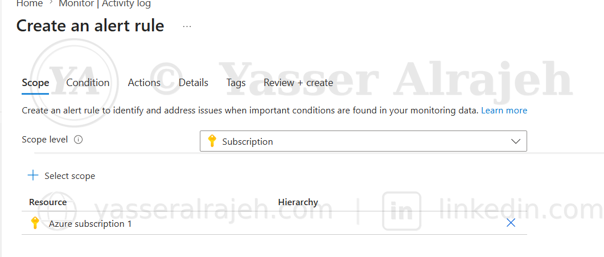
Alert-rule setup opened from Monitor / Activity log with the subscription selected as scope.
7. Project Conclusion
This project established a practical Azure governance foundation across Production and Development environments. The implementation combined standardized tagging, Azure Policy enforcement, scoped RBAC, resource protection, budget controls, compliance review, negative testing, and subscription-level monitoring preparation.
The final portfolio page now keeps the original implementation evidence while ensuring that each screenshot is described by what it actually shows.